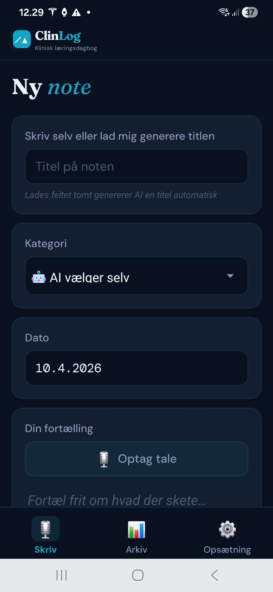
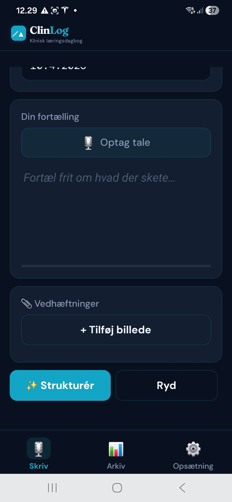
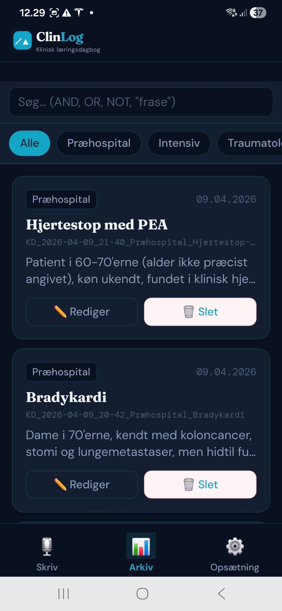
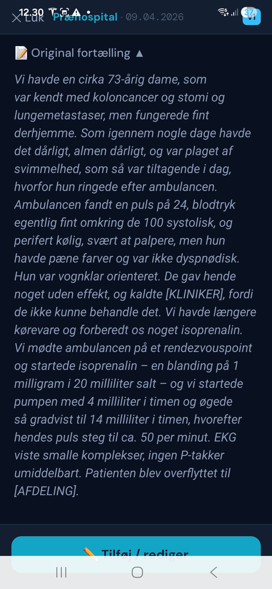
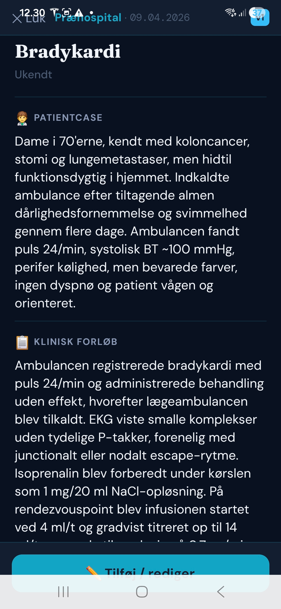
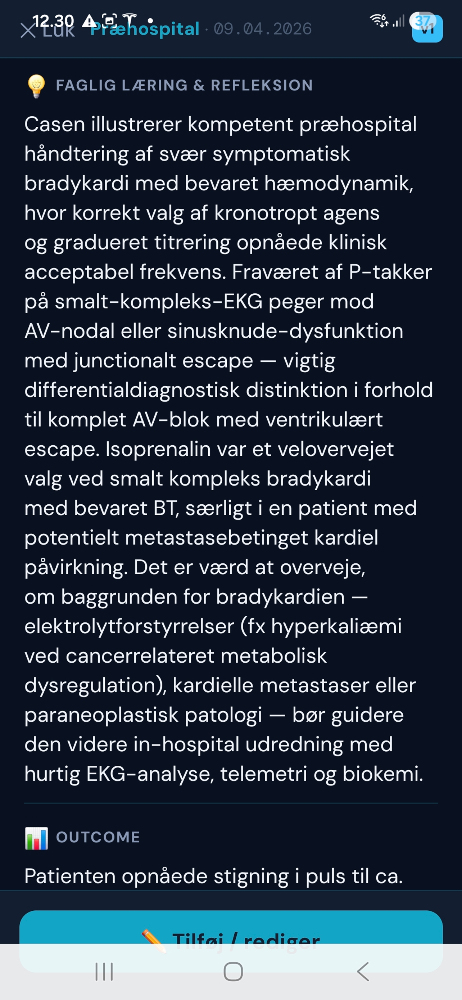

Velkommen tilbage til ClinLog
Ingen konto?
Henter noter…
Henter referencer…
Clinlog hjælper læger, sygeplejersker, studerende og andre sundhedspersoner med at dokumentere, reflektere og lære fra kliniske oplevelser — diktér med medicinsk talegenkendelse, struktureret af AI, specialitetsspecifik og GDPR-sikker.
Designet af en praktiserende anæstesiolog — til alle specialer.
Diktér dine noter direkte under eller efter klinisk arbejde — avanceret talegenkendelse med fuldt kendskab til medicinsk fagterminologi. Clinlog forstår "sugammadex", "laryngoskopi" og "CUSUM" uden stavefejl.
Skriv eller diktér frit — AI'en organiserer automatisk din tekst i klinisk relevante sektioner: patientcase, forløb, læring og refleksion.
Automatisk kompetencevurdering baseret på officielle danske standarder fra Sundhedsstyrelsen og specialeselskaberne.
Brugeren gøres opmærksom på at der ikke må videregives personhenførbare data — hverken via tekst, stemme eller billedmateriale. Avancerede algoritmer sikrer desuden at eventuelle personhenførbare data automatisk erstattes direkte på din enhed, inden noget gemmes eller sendes til AI. Intet forlader din enhed uden at være fuldt anonymiseret.
Følg din faglige udvikling over tid. Se mønstre i dine kompetencer, identificér styrker og udviklingsområder på tværs af vagter.
Eksportér dine noter og læringsrapporter til din uddannelsesportfolio, vejleder eller logbog med ét tryk.
Fuld dansk og nordisk sprogunderstøttelse. Dækker alle godkendte specialer i Danmark og Norden — tilpasset hvert speciales uddannelsesstruktur, kompetencekrav og terminologi.
Med tiden opbygger Clinlog en unik, anonymiseret database af reelle kliniske erfaringer på tværs af specialer og hospitaler. Jo flere brugere, jo mere værdifuld bliver den.
Find ud af hvordan kolleger håndterede lignende cases — på tværs af specialer, afdelinger og hospitaler. Søg på diagnose, procedure, komplikation eller læringspointe.
Brugere kan aktivt tilvælge at være kontaktbare. Finder du en erfaring der er særlig relevant, kan du anmode om at komme i kontakt med den anonyme bidragsyder — på dine egne præmisser.
Databasen bliver mere informativ for hver bruger der bidrager. Det er kollektiv intelligens fra frontlinjen — ikke lærebøger, men hvad der virker i den virkelige klinik.
Erfaringer fra universitetshospitaler, regionshospitaler og præhospitalt miljø samles ét sted. Sjældne cases og uventede fund bliver synlige for hele fællesskabet.
En note om evidens: Kliniske erfaringsregistreringer udgør C-evidens i evidenshierarkiet — og kan ikke erstatte randomiserede studier. Men denne samling er unik: den repræsenterer real-world klinisk praksis i en skala og detaljegrad som ikke findes andre steder, og med tilstrækkelig volumen åbner den for værdifulde mønstre og indsigter.
Planlagt GA til bariatrisk kirurgi. Cormack-Lehane grad III ved direkte laryngoskopi. Videolaryngoskop (C-MAC) afgjorde sagen — intubation lykkes i 2. forsøg. CUSUM +1.0.
✉ Bidragsyder er kontaktbarAkut sectio, BMI 47. Spinalanæstesi foretrukket frem for GA pga. luftvejsrisiko. Teknisk udfordrende pga. anatomiske forhold — ultralyd vejledte nåleplacering.
✉ Bidragsyder er kontaktbarPræhospital RSI, GCS 6, mistænkt cervikalskade. Manuelt hold af akse, bougie first-pass strategi. Vigtig erfaring: kommunikation med makker er afgørende.
🔒 Ikke kontaktbarIngen skemaer at udfylde. Ingen templates. Bare fri tekst — AI'en klarer resten.
Tal frit under eller efter klinisk arbejde — medicinsk talegenkendelse fanger fagtermer korrekt. Eller skriv, hvis du foretrækker det.
Appen minder dig om ikke at videregive personhenførbare data. Avancerede algoritmer scanner og anonymiserer automatisk tekst, tale og billeder — inden noget bearbejdes eller gemmes.
Se kompetencevurderinger, læringsanalyse og forslag til videre fordybelse — tilpasset dit speciale.
Del med din vejleder eller tilføj til din uddannelsesportfolio med PDF/DOCX-eksport.
Uanset speciale eller erfaringsniveau — Clinlog dækker alle specialer i Danmark og Norden.
Strukturér dine tidlige kliniske erfaringer og nå dine KBU-kompetencer
Dokumentér din faglige progression mod speciallæge
EPA-niveau og CUSUM automatisk tilpasset dit speciale
Klinisk refleksion tilpasset sygeplejefaglige kompetencer
Byg gode refleksionsvaner fra dag ét i klinikken
Bioanalytikere, fysioterapeuter, paramedicinere og øvrige kliniske faggrupper
Clinlog er skabt af Frank Pott, speciallæge i anæstesiologi med klinisk arbejde inden for anæstesi, intensiv og præhospital medicin i Danmark — og Daniel Pott, app-udvikler.
Idéen opstod fra en simpel frustration: der fandtes ingen god måde at dokumentere og lære fra de kliniske oplevelser, der fylder hverdagen — de svære intubationer, de komplekse beslutninger, de øjeblikke hvor man tænker "det her skal jeg huske."
Clinlog er ikke endnu et ambulant journalsystem. Det er et personligt læringsværktøj — designet til den travle kliniker der vil bruge 5 minutter på at blive en bedre læge.
Appen guider dig gennem hele forløbet — fra frisk diktation til AI-struktureret note med klinisk refleksion, referencer og kompetencevurdering.

Giv noten en titel — eller lad AI generere den automatisk. Vælg kategori, eller lad AI'en vælge det rette speciale.

Tryk "Optag tale" og fortæl frit om hvad der skete. Tilføj evt. et billede fra klinikken — anonymiseret automatisk.

Find alle dine noter hurtigt med fritekstsøgning og kategorifilter — præhospital, intensiv, traumatologi og mere.

Din rå diktation gemmes — præcis som du fortalte den. Du kan altid se og redigere den originale tekst.

AI'en opdeler automatisk din fortælling i patientcase, klinisk forløb, faglig læring og outcome.

Den dybeste sektion: hvad lærte du? AI'en hjælper med at formulere klinisk relevant refleksion og outcome.
Her ser du et anonymiseret præhospitalt notat fra en rigtig klinisk situation — præcis som det vises for en registreret bruger på portalen. Læs, reflektér, og se hvad Clinlog kan.
💡 Dette er et anonymiseret eksempelnotat. Registrerede brugere ser alle deres egne noter på samme måde — med søgbare referencer og faglig analyse.
Tilmeld dig ventelisten og få besked når beta-adgang åbner — og mulighed for at påvirke hvilke funktioner der bygges først.
Ingen spam. Afmeld når som helst. Dine data deles ikke med tredjeparter.
App'en er under udvikling og lanceres i 2026
Er du interesseret i at afprøve Clinlog, samarbejde om klinisk validering, eller blot nysgerrig på projektet? Skriv gerne direkte.
frank@clinlog.dk